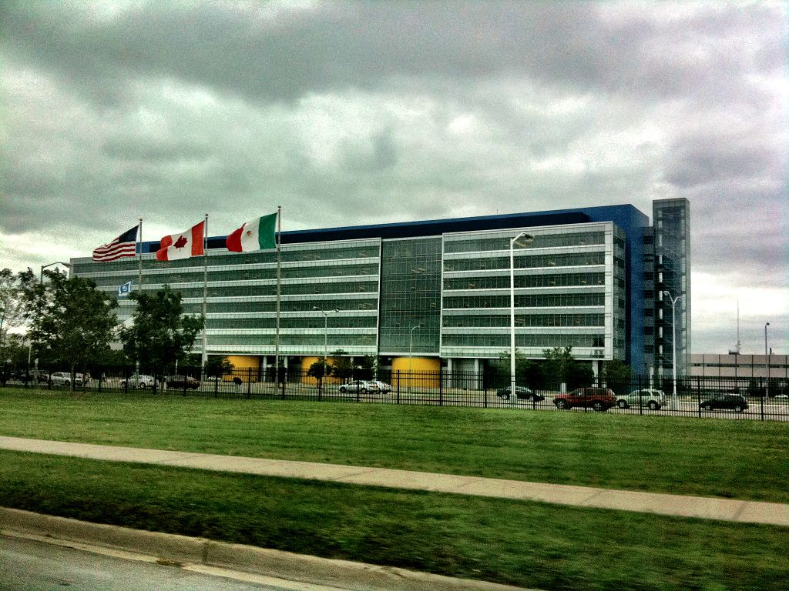

Gabriel MargolisI am a PhD student at the Computer Science and Artificial Intelligence Laboratory (CSAIL) at MIT, where I work on Embodied Intelligence. My research, advised by Pulkit Agrawal, is concerned with making effective use of vision in contact-rich control tasks. Previously, I received my BS ('20) and MEng ('21) degrees at MIT. |
ResearchI'm interested in robot learning, visual control, and contact-rich interaction. |

|
Learning to Jump from PixelsGabriel Margolis, Tao Chen, Kartik Paigwar, Xiang Fu, Donghyun Kim, Sangbae Kim, Pulkit Agrawal CoRL, 2021 paper / bibtex / project page A hierarchical control framework for dynamic vision-aware locomotion. |
TeachingClasses I've taught. |
6.141 Robotics: Science and SystemsIn Spring 2021, I was a TA for Robotics: Science and Systems, taught by Luca Carlone. Students learned to construct an autonomous driving stack from the ground up, implementing control, path planning, and localization algorithms in ROS and deploying them in simulation as well as on real hardware. The semester culminates with the Grand Challenge: an all-out autonomous race through the basement of MIT’s Stata Center. This year, our course staff supported both a socially distanced in-person challenge and an online challenge. |
|

|
16.410 Principles of Autonomy and Decision MakingIn Fall 2020, I was a TA for Principles of Autonomy and Decision Making, taught by Howie Shrobe. We introduced our roughly eighty students to planning as state-space search, then took them for a deep dive into algorithms for reasoning efficiently under constraints and uncertainty. Our primary textbook is Artificial Intelligence: A Modern Approach by Russell & Norvig. I held recitations and office hours, wrote exams and problem sets, and advised group-based final projects, alongside one other awesome TA. |
Other Projects
|
|  |
General Motors - Autonomous DrivingIn Summer 2019, I spent three months at GM’s Global Technical Center in Warren, Michigan. I was a member of the Advanced Engineering group’s Autonomous Driving Advanced Sensing team, led by Jon Gerlach. While there, I developed sensor alignment and validation software tooling, met with suppliers, and analyzed emerging sensing technologies, including event-based cameras. |
|
Design and source code from Jon Barron's website and Leonid Keselman's Jekyll Fork |